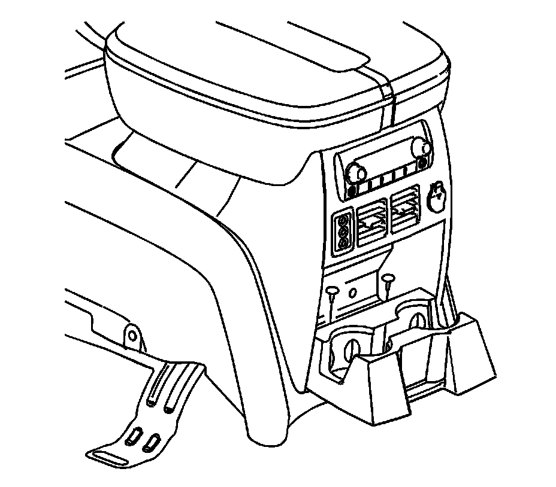
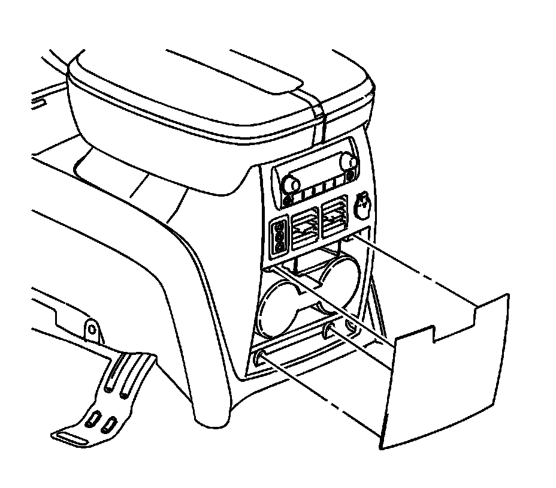
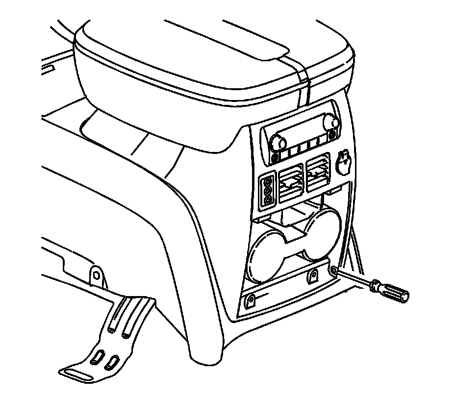
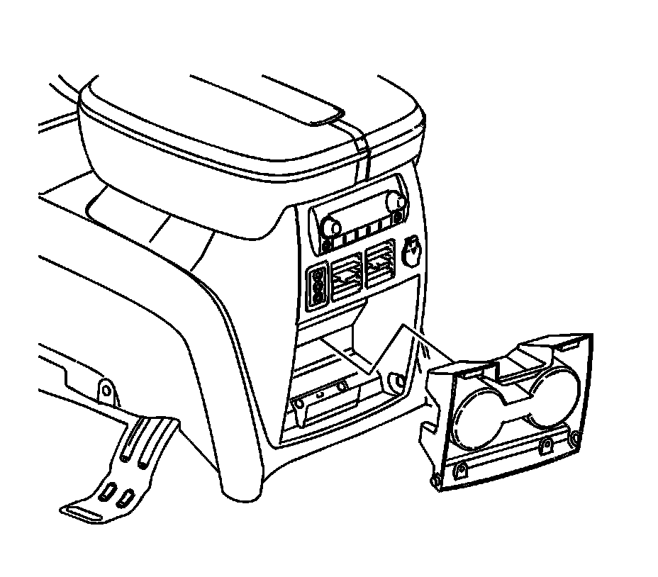

Drink Holders: Service and Repair
Front Floor Console Cup Holder Replacement (Cadillac)
Removal Procedure

1. Open the cupholder assembly.
2. Remove the screws securing the door to the cupholder.

3. Remove the door from the cupholder assembly.

4. Insert a flat bladed tool between the console assembly and the cupholder and release the retaining tab.

5. Remove the cupholder from the console assembly.
Installation Procedure
1. Install the cupholder into the console assembly.
2. Position the door to the cupholder assembly.
Notice: Refer to Fastener Notice .
3. Install the screws securing the cupholder door to the cupholder assembly.
Tighten the screws to 2 N.m (18 lb in).